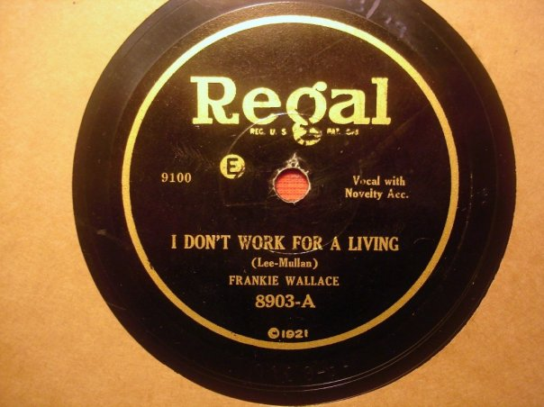
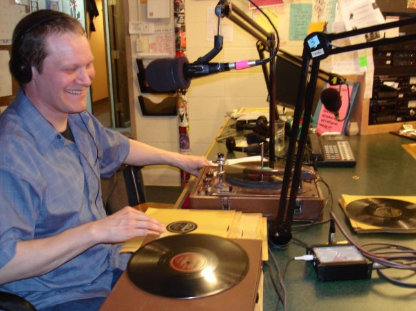
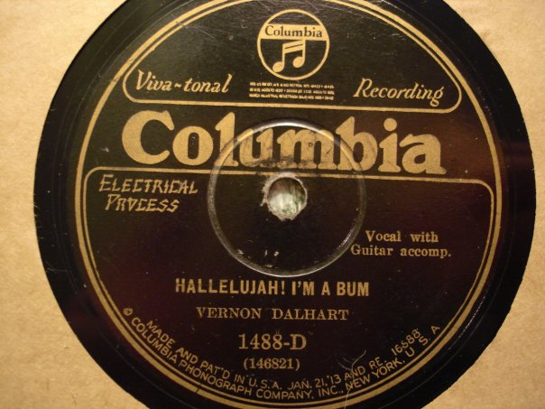
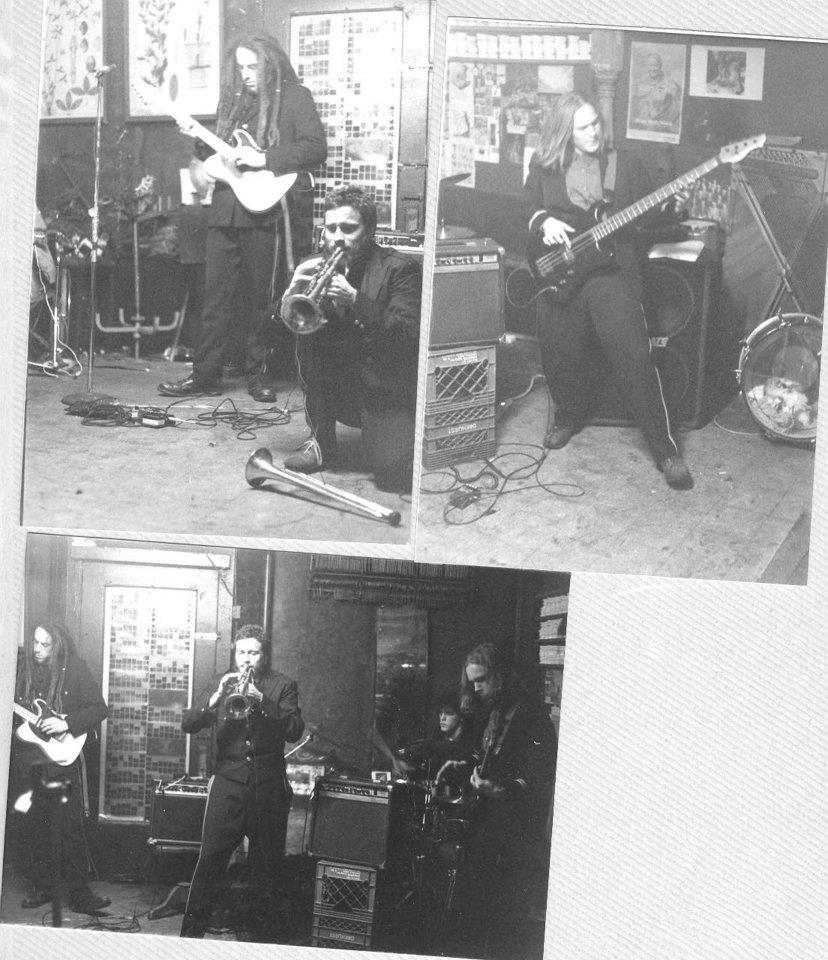
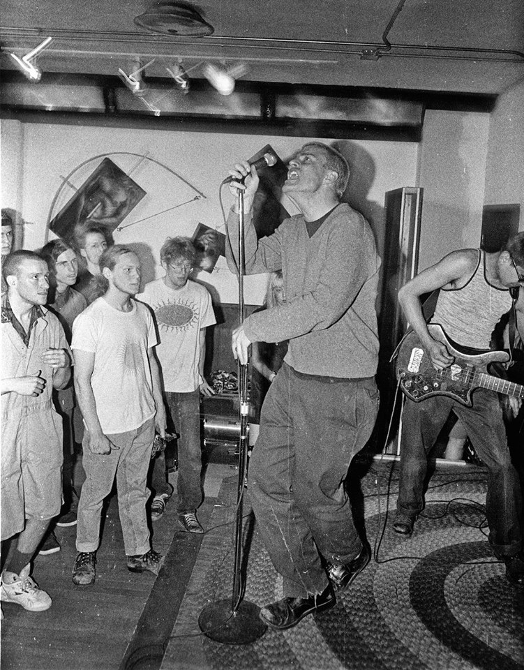
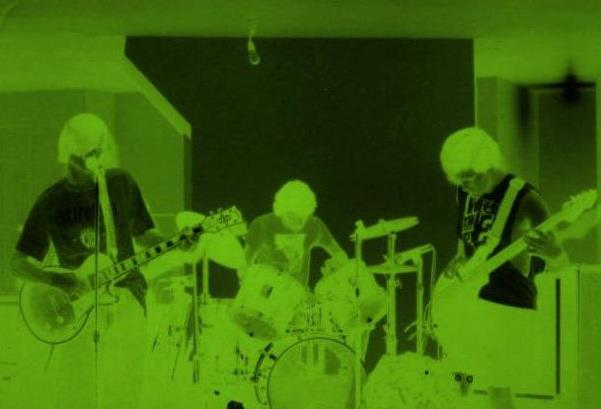

HOBBIES
I collect really old records called 78's. They spin at 78 RPM. They were made out of shellac, not vinyl. Here's my anthem.

Sometimes I DJ my records at radio stations

Here is another old classic

I ride bicycles all the time for a hobby, but as this photo proves, I used to ride professionally as a messenger.
I used to play music in a lot of bands> I was quite the rebel.
 >

